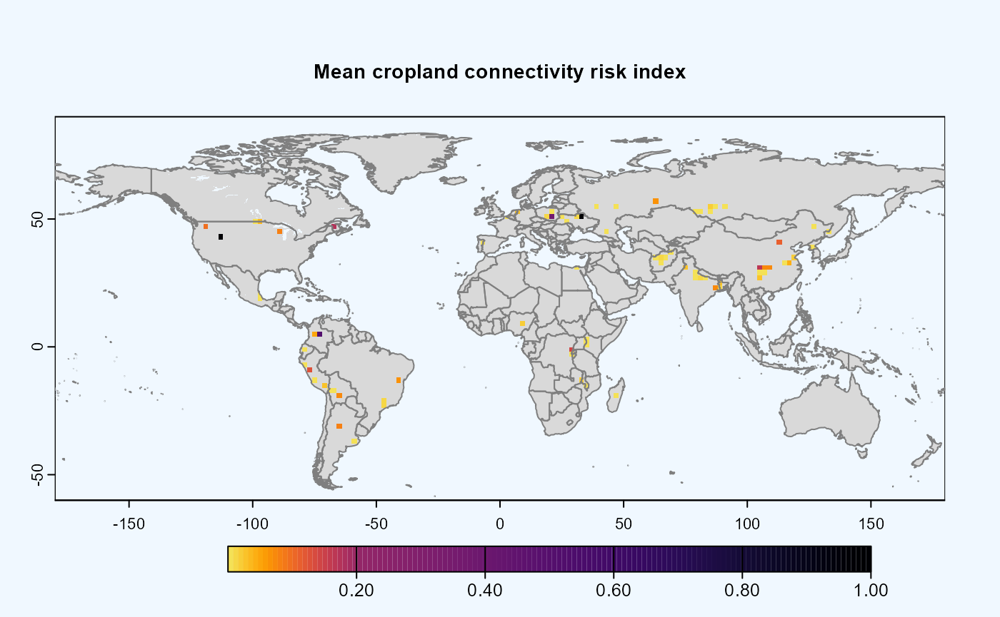
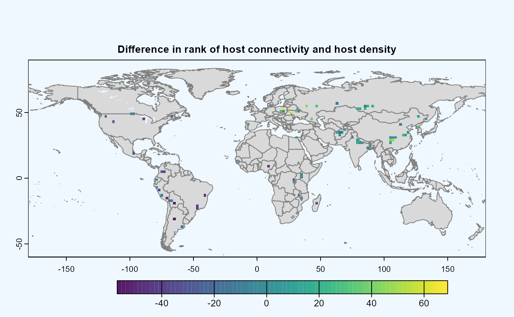

Network centralities in GeoHabnet
Plex, Sula (plexaaron@ufl.edu), Krishna Keshav(kkeshav@ufl.edu)
19 June, 2024
Source:vignettes/LinkWeightsAnalysis.Rmd
LinkWeightsAnalysis.RmdThis article expands on “Analyzing risk index using habitat connectivity” from (Keshav et al. 2023) to demonstrate one example on how parameters can be customized to calculate centrality and it’s implication in the results.
Package installation -
if (!require("geohabnet")) {
utils::install.packages("geohabnet")
}## Loading required package: geohabnetBetweenness
Getting the host density
avocado_mon <- geohabnet::cropharvest_rast("potato", "monfreda")Running Sensitivity Analysis
avocado_result <- geohabnet::msean(avocado_mon, global = TRUE, link_threshold = 0.000001,
inv_pl = list(beta = c(0.5),
metrics = c("betweeness"),
weights = c(100),
cutoff = -1), res = 24,
neg_exp = list(gamma = c(0.1),
metrics = c("betweeness"),
weights = c(100), cutoff = -1))##
|---------|---------|---------|---------|
=

##
|---------|---------|---------|---------|
=
|---------|---------|---------|---------|
==
##
|---------|---------|---------|---------|
=

It is important to note that Betweenness centrality is a time
intensive operation. Geohabnet uses a wrapper around
igraph::betweenness(). Refer to (Csardi and Nepusz 2006) for more details and
further reading. The cutoff parameter can be used set the
threshold which will include the link weights based on this threshold.
Setting this parameter will also be reflected in closeness.
The configuration based run for the above will be as follows -
get_parameters() -> modify values in parameters.yaml -> set_parameters() -> run sensitivity_analysis()